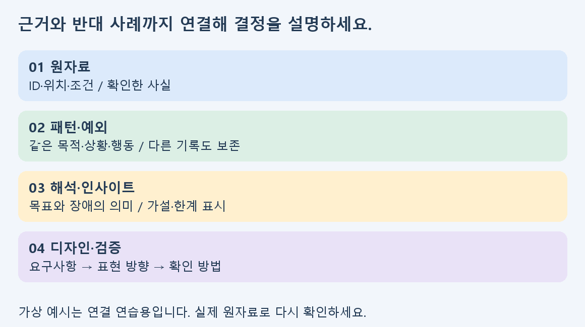

시각디자인 리서치 분석 | A그룹
1. 잘된 분석을 검증 가능한 전략으로 다듬기
시장·사용자·브랜드 방향의 연결이 갖추어졌다면, 이제는 같은 기준의 비교와 판단의 한계, 실행 순서를 보완하세요. 실제 구매·사용 기록과 경쟁 디자인의 차이를 대조하여 왜 그 방향을 선택했는지 설명합니다.
| 현재 결과 | 이번 보완 | 남길 기록 |
|---|
| 콘셉트의 설명력이 좋음 | 경쟁 대안과의 차이를 근거로 검토 | 비교 기준·반대 사례 |
| 시장·트렌드를 연결함 | 범위가 다른 수치와 전망을 분리 | 조건·단위·해석의 한계 |
| 확장 아이디어가 많음 | 사용자 필요와 제작 제약으로 순서 결정 | 1차·확장·보류와 검증 조건 |
권장 학습시간 160분: 기준·시장 범위 30분 → 경쟁·포지셔닝 45분 → 사용자·요구사항 45분 → 개발수준·발표 40분. 선택 영상은 별도로 약 17분입니다.
첨부의 메모·브랜드·가격·사용 상황은 모두 설명용 가상 데이터입니다. 실제 시장조사나 학생 조사 결과가 아닙니다. 자신의 평가 결과물에는 실제 원자료를 사용하고, 제공·모의 자료를 쓰면 유형을 표시하세요. 이 자료는 기존 평가의 배점·제출 조건을 바꾸지 않습니다.
시각디자인 리서치 분석 | A그룹
2. 시장의 경계와 전망의 조건 점검하기
인접 시장이 성장한다는 사실만으로 내 제품의 수요가 늘어난다고 결론 내릴 수는 없습니다. 핵심 제품군, 대체 제품군, 참고 환경을 나누고 서로 다른 시장 규모를 합산하지 마세요.
| 구분 | 분석 방법 | 결론의 표현 |
|---|
| 핵심 시장 | 같은 용도·지역·기간·단위의 지표 비교 | 확인한 범위의 현황을 기술 |
| 대체·인접 시장 | 같은 목적을 다른 방식으로 해결하는 이유 비교 | 직접 수요와 구분하여 기회로 해석 |
| 전망·수요 | 예측 주체·전제·시나리오·빠진 자료 확인 | 조건이 충족될 때의 가능성으로 표현 |
각 주장에 R-01 같은 근거ID와 원문 페이지를 붙이세요. 성장률의 기준 연도·산정 기간이 다르면 비교 불가 이유를 적습니다. 시장 수치가 없으면 추정치를 만들지 말고 다음에 확인할 자료를 지정합니다.
실습 ① 시장 주장 두 개를 골라 범위·시점·단위를 점검하세요. ② 같은 질문에 서로 다른 답을 주는 자료를 찾아 차이의 원인 후보를 적으세요. ③ 확인한 현황과 아직 검증할 전망을 두 문장으로 나누세요.
시각디자인 리서치 분석 | A그룹
3. 경쟁사 장단점을 디자인의 원리로 분석하기
직접 경쟁은 같은 제품군의 대안이고, 간접 경쟁은 같은 목적을 다른 방식으로 해결하는 대안입니다. 동일한 구매·사용 접점을 비교하고, 브랜드의 공식 설명과 자신의 관찰·추정을 분리하세요.
| 비교 기준 | 관찰할 내용 | 디자인 판단 |
|---|
| 정보 위계 | 무엇이 먼저 읽히고 무엇이 숨겨지는가 | 핵심 선택 정보를 어디에 배치할 것인가 |
| 형태·구조 | 개폐·휴대·구성품·정보 묶음 | 어떤 상황에서 도움이 되거나 제약이 있는가 |
| 색·타입·재질 | 색의 역할·대비·글자 크기·공식 재질 표기 | 브랜드 무드와 읽기·구분 목적이 양립하는가 |
| 가격·구성·채널 | 동일 용량·세트 조건·판매 시점 | 가격만으로 디자인 품질을 단정하지 않는가 |
“미니멀해서 좋다”보다 “앞면에서 용도와 규격이 같은 구역에 모여 있다 → 비교 시 탐색을 줄일 가능성 → 실제 비교 과업으로 확인”처럼 관찰과 가설을 연결하세요. 사진만으로 촉감·내구성·효능을 확정하지 않습니다.
실습: 직접 대안 두 개와 간접 대안 한 개를 권장합니다. 비교표에 각 장점·제약의 원자료를 붙이고, 내 프로젝트에서 적용·수정·배제할 원리를 한 가지씩 정하세요. 개수는 연습 권장값입니다.
시각디자인 리서치 분석 | A그룹
4. 축과 위치에 근거가 있는 포지셔닝 맵

축은 프로젝트의 중요한 선택 기준을 나타내야 합니다. “좋음–나쁨”처럼 결과가 정해진 축보다, 확인 가능한 구성이나 사용 특성을 선택하세요. 첨부 예시는 가상의 S-01~03을 구획·모듈 수 기준으로 배치한 연습입니다.
| 정할 것 | 기록할 내용 |
|---|
| 가로·세로축 | 무엇을 어떤 단위로 구분했는지와 선택 이유 |
| 좌표 | 사례별 원자료와 구간 정의·미확인 항목 |
| 기회 해석 | 빈 공간이 실제 사용자 필요인지 아직 가설인지 |
| 목표 위치 | 내 디자인이 지향할 조건과 그 조건의 제약 |
실습: 현재 맵의 한 축을 관찰 가능한 기준으로 다시 정의하세요. 좌표의 근거를 찾을 수 없는 사례는 “위치 미확인”으로 남깁니다. 빈 공간이 있다는 이유만으로 수요가 있다고 쓰지 않습니다.
시각디자인 리서치 분석 | A그룹
5. 트렌드에서 재사용할 원리와 배제할 조건
트렌드 이미지를 모은 다음에는 반복되는 표현의 역할을 분석해야 합니다. 국내외 사례의 시점·대상·매체가 다르면 그 차이를 적고, 최근 사례 몇 개만으로 전체 시장의 추세를 단정하지 마세요.
| 분석 단계 | 작성 질문 |
|---|
| 조형 관찰 | 색·타입·레이아웃·이미지·재질에서 실제로 반복되는 것은 무엇인가? |
| 의미 해석 | 그 표현은 어떤 정보·감정·행동을 지원할 가능성이 있는가? |
| 자원화 | 그 형태를 그대로 복제하지 않고 어떤 규칙으로 바꿀 것인가? |
| 적용·배제 | 어떤 사용자·내용·제작 조건에서 쓰거나 쓰지 않을 것인가? |
예: 큰 숫자가 반복된다고 관찰했다면 “큰 숫자 사용”에서 끝내지 말고 규격·단계 등 무엇을 먼저 비교하게 할지 정합니다. 모든 요소를 크게 만들면 위계가 사라질 수 있으므로 우선순위와 대비 조건도 적으세요.
실습: 트렌드 카드 두 장에 원자료 → 반복 원리 → 내 표현 규칙 → 적용하지 않을 상황을 작성하세요. 디자인 이론은 이름만 붙이지 말고 위계·대비·일관성 등 실제 판단에 사용한 원칙을 설명합니다.
시각디자인 리서치 분석 | A그룹
6. 사용자 구분과 반대 사례로 해석 검토하기
같은 연령이라도 구매자·실사용자·선물 수령자의 목적은 다를 수 있습니다. 사용자군은 핵심 목표와 사용 상황, 반복 행동을 기준으로 묶고 원자료를 다시 확인하세요.
| 점검 | 분석 질문 |
|---|
| 행동 패턴 | 비슷한 기록이 같은 목적과 맥락에서 나온 것인가? |
| 예외 | 다르게 행동한 기록이 있는가, 그 이유를 확인했는가? |
| 한계 | 표본·모집·리뷰 채널이 누구의 관점을 빠뜨렸는가? |
| 전략 | 각 사용자군에 어떤 정보·구조·접점을 우선 제공할 것인가? |
한 사람의 기록에서 얻은 통찰도 다음 확인의 출발점이 될 수 있지만, 전체의 비율이나 대표성으로 바꾸어 말하지 마세요. 반복 언급 수는 고유 참여자 수와 구분하고 인과관계로 확대하지 않습니다.
실습: 내 사용자 정의를 지지하는 기록과 다른 기록을 나란히 적으세요. 차이가 나면 기록을 삭제하지 말고 집단 경계를 조정하거나 검증 질문으로 남깁니다.
시각디자인 리서치 분석 | A그룹
7. 인사이트를 디자인 요구사항으로 전환하기

인사이트는 요약된 사실보다 한 단계 더 나아가, 특정 상황에서 사용자가 달성하려는 목표와 막히는 이유를 설명하는 분석입니다. 아직 확인하지 못한 이유는 가설로 표시합니다.
| 연결 단계 | 가상 연습 예시 |
|---|
| 원자료 | D-01·02에서 기록 도구를 찾거나 챙기는 행동을 확인했다고 가정 |
| 패턴·인사이트 | 이동 전 준비 부담이 기록 시작을 방해할 수 있다는 가설 |
| 요구사항 | R-01: 핵심 구성품을 한 구역에서 확인하도록 정보와 구성을 정리 |
| 디자인 방향 | 구성 목록·휴대 구획·정보 위계를 같은 기준으로 표현 |
| 다음 검증 | 실제 사용자에게 준비·선택 과업을 제시하고 누락·질문을 관찰 |
실습: 인사이트 두 개에 근거·예외·요구사항·확인 방법을 연결하세요. “세이지 그린이 유행한다 → 모두 초록색”처럼 표현을 먼저 고른 뒤 근거를 끼워 맞추지 않습니다.
시각디자인 리서치 분석 | A그룹
8. 개발수준을 단계와 조건으로 예측하기
개발수준은 제품·기능 목록을 많이 쓰는 일이 아닙니다. 핵심 사용자 목적에 필요한 1차 범위와 확장 조건을 판단하는 일입니다. 제작·운영·검증 자원이 없으면 가능하다고 단정하지 마세요.
| 단계 | 분석할 내용 | 넘어갈 조건 |
|---|
| 1차 핵심 | 가장 중요한 사용 상황·제품·표시 정보 | 핵심 요구를 설명하고 확인할 방법이 있음 |
| 확장 후보 | 다른 사용자·구성·채널·서비스 | 추가 사용자 근거와 제작·운영 여건 확인 |
| 보류 | 핵심 목적과 관련이 약하거나 미확인 위험이 큼 | 필요한 자료·전문 검토·재검토 시점 명시 |
앱·구독·개인화·연동 같은 확장도 각 사용자 필요와 유지 자원을 확인해야 합니다. 식품·건강·환경 관련 콘셉트의 성능이나 인증·제조 가능성은 별도 검토 항목으로 남기고, 디자인 분석만으로 입증한 것처럼 쓰지 않습니다.
실습: 내 개발 계획을 세 단계로 다시 정리하세요. 각 단계에 사용자·근거ID·선행조건·확인할 질문을 붙이고, 구두발표에서 “왜 지금 이 단계인가”를 설명합니다.
시각디자인 리서치 분석 | A그룹
9. 국내 전문가 자료로 분석 기준 점검하기
국내 실무자의 한국어 무료 공개 글과 영상입니다. 처음 네 자료는 읽기, 마지막 영상은 선택 활동입니다. 링크를 열고 아래 질문에 답하세요.
pxd 전성진
멘탈모델(2)-행동중심의 디자인접근법 · 공개일 2010-07-06
읽거나 보고 할 일: 행동 추출·패턴 찾기 부분에서 내 분류 기준을 점검하세요.
pxd 박재현
정성, 정량 조사를 병행하여 퍼소나에 설득력 부여하기 · 공개일 2018-12-05
읽거나 보고 할 일: 사용자 구분을 지지하는 근거와 반대 근거를 적으세요.
삼성SDS 최영현
디자인 씽킹③ - 디자인 씽킹으로 올바른 질문에 올바른 답을 찾는다 · 공개일 2018-08-03
읽거나 보고 할 일: 문제 정의를 읽고 내 요구사항의 대상·상황을 명시하세요.
토스 김서연
토스 UX 리서처는 어떤 방법론을 사용할까? · 공개일 2024-03-13
읽거나 보고 할 일: 두 사례를 읽고 결론을 바꿀 추가 확인 조건을 정하세요.
공돌이 디자이너
현직 UXUI 디자이너 포트폴리오 공개합니다 · 공개일 2020-04-09
읽거나 보고 할 일: 16분 23초의 사례 영상입니다. 분석과 디자인 선택이 연결되는 장면을 골라 재생 시각과 설명을 적으세요.
방법을 배우는 참고자료입니다. 과거 글의 시장 현황을 현재 사실로 사용하지 말고, 자신의 프로젝트 시점에 맞는 원문을 확인하세요. 외부 글·이미지는 복제하지 않았으며, 본문의 도식과 가상 연습자료는 별도로 작성했습니다.
시각디자인 리서치 분석 | A그룹
10. 구두발표와 수정 결과 자기점검
| 점검 | 확인할 내용 |
|---|
| 근거 | 본문 주장에 원자료ID·위치·조건이 연결되는가? |
| 비교 | 범위·단위·접점·기준이 서로 같은가? |
| 해석 | 관찰·패턴·해석·가설·한계를 구분했는가? |
| 사용자 | 연령만이 아니라 목적·상황·행동으로 구분했는가? |
| 디자인 결정 | 색·타입·정보 배치·구조의 선택 이유가 분석에 연결되는가? |
| 개발수준 | 1차·확장·보류와 다음 검증 조건을 설명할 수 있는가? |
권장 발표 구조는 문제와 범위 → 비교·분석 기준 → 핵심 발견과 예외 → 디자인 요구사항 → 개발수준과 다음 검증입니다. 표의 모든 칸을 읽기보다 결정에 영향을 준 차이를 짚으세요.
| 예상 질문 | 준비할 답 |
|---|
| 왜 이 경쟁 대안을 골랐나요? | 같은 사용자 목적·선택 상황과 제외한 대상 |
| 다른 자료는 다른 결론을 말하지 않나요? | 범위·시점 차이와 반대 근거, 내 해석의 한계 |
| 왜 이 색·형태·정보 구조인가요? | 근거와 요구사항에 연결된 표현 원리 |
| 무엇을 먼저 만들고 무엇을 보류하나요? | 1차 범위와 확장·보류의 조건 |
완료: 수정 전후의 핵심 차이 두 가지와 아직 검증하지 못한 점을 기록하세요. 다음 학습은 사용자 검증 결과에 따라 요구사항과 개발수준을 조정하는 것입니다. 구현·출시 완료를 이 지원학습의 필수 결과로 요구하지 않습니다.